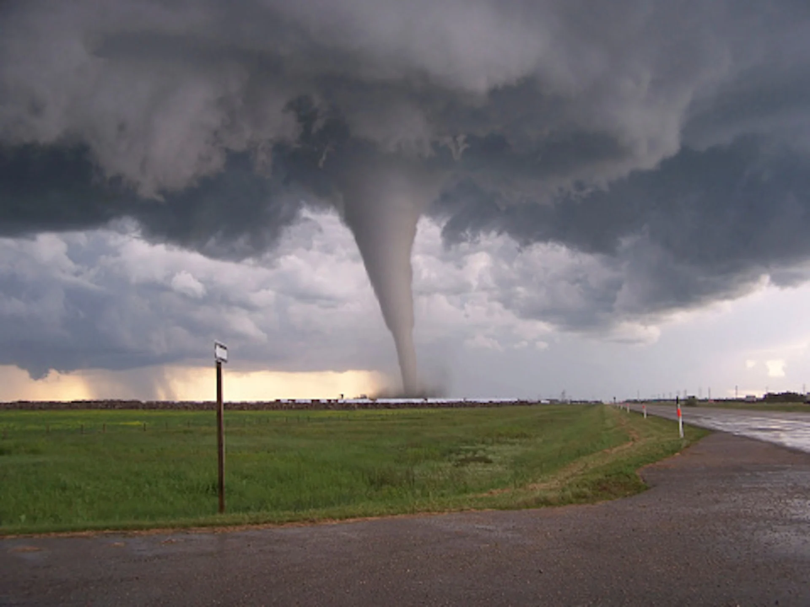
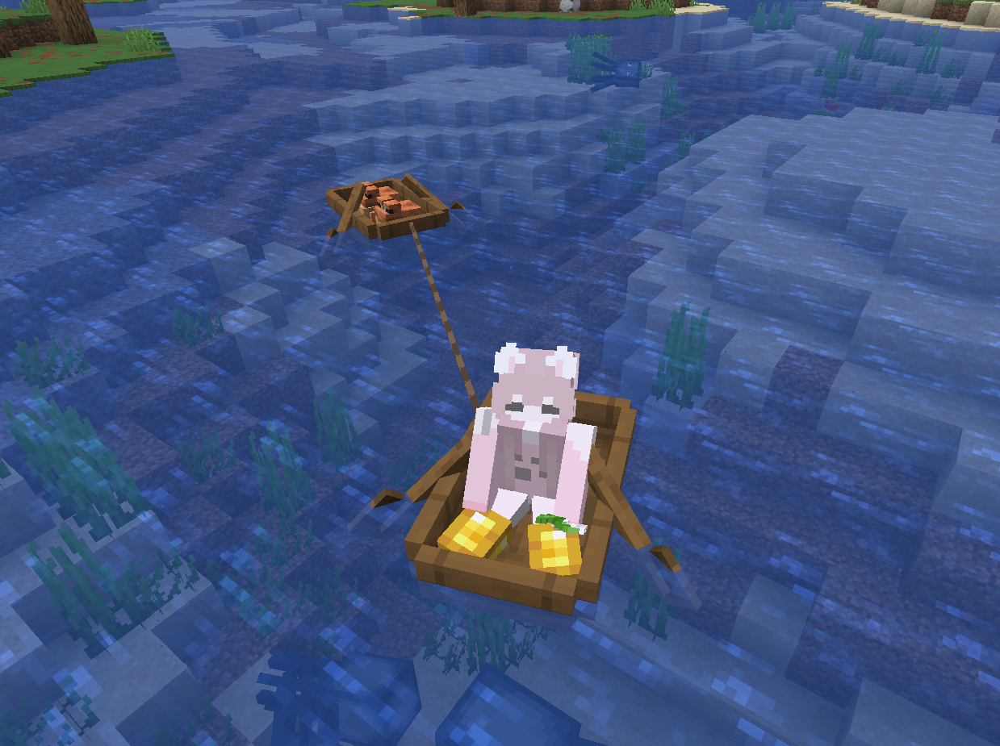
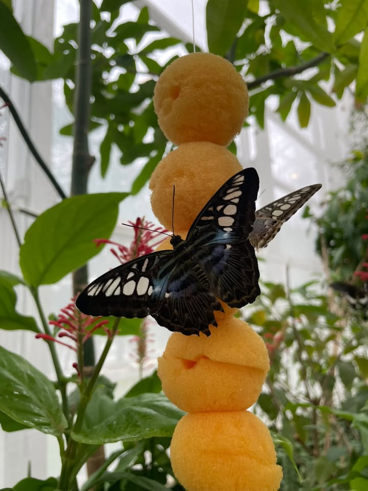
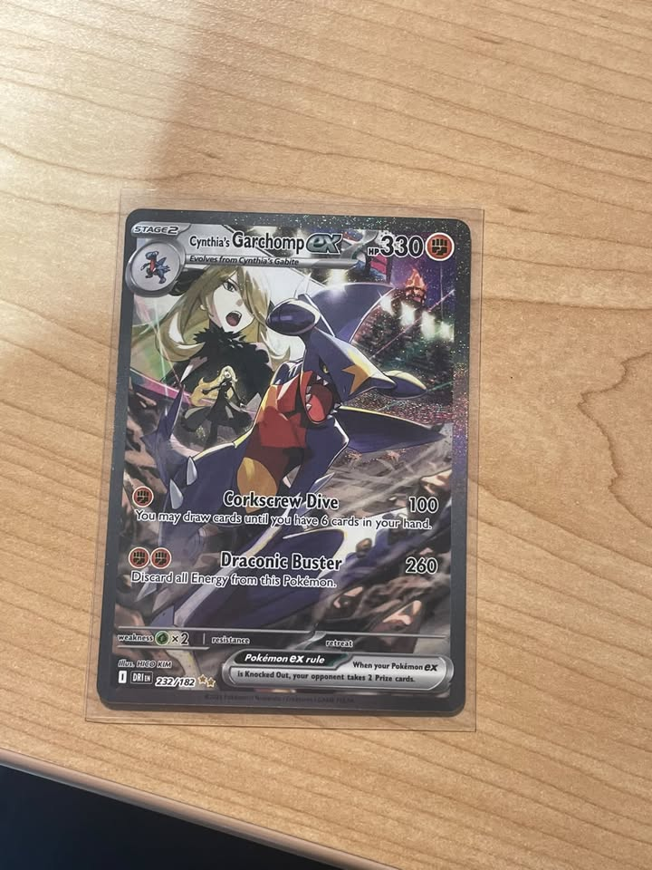

I have many interests and hobbies, spanning from tornadoes and bugs, to video games and gardening!
₊˚ ✧ ‿︵‿୨୧‿︵‿ ✧ ₊˚My most recent obsession lately are tornadoes. I am insanly fascinated by these twisters, writing essays and learning to read radars!
I hope that in my mid 20s I will go tornado hunting in Oklahoma with my boyfriend!


Ive mentioned before how I was a gamer, ive played video games all my life. Ive played games such as roblox, beat saber, tiny glade, and many more. But one game that I play constantly to this day is Minecraft!



I remember the first time I played minecraft, I must of been 9 or 10. It was on the ps4 in the living room. My dad has taken control of the remote cause I was confused and drowning in water. I had a nightmare about zombie and creepers that night.
like many other kids, I had a little youtube channel for my minecraft gameplay of the tutorial maps for Minecraft Bedrock
Bugs are another fascination for me. Every since I met my boyfriend, I go outside, I go hiking, and I discover my love for nature and creatures.


When I was younger, I was so afraid of bugs, especially wasps and bees. But now Ive found my love for their little details. I wonder why humans arent colorful and full of patterns like bugs



My love for Pokemon came back from my youth. I started recollecting again and I found out how expensive these cards can get. Recently me and my man pulled an SIR worth 200$ (if you guys are interested let me know)!
My favourite pokemon is Smoliv, such a cute and confused pokemon!.